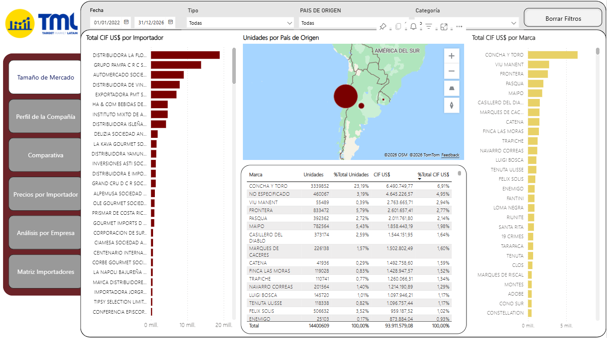
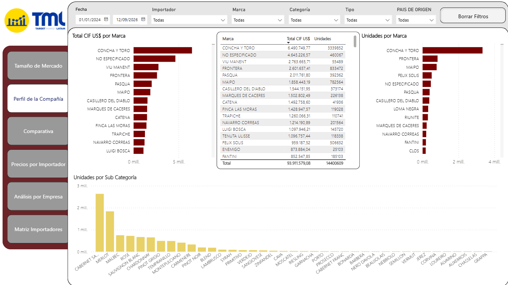
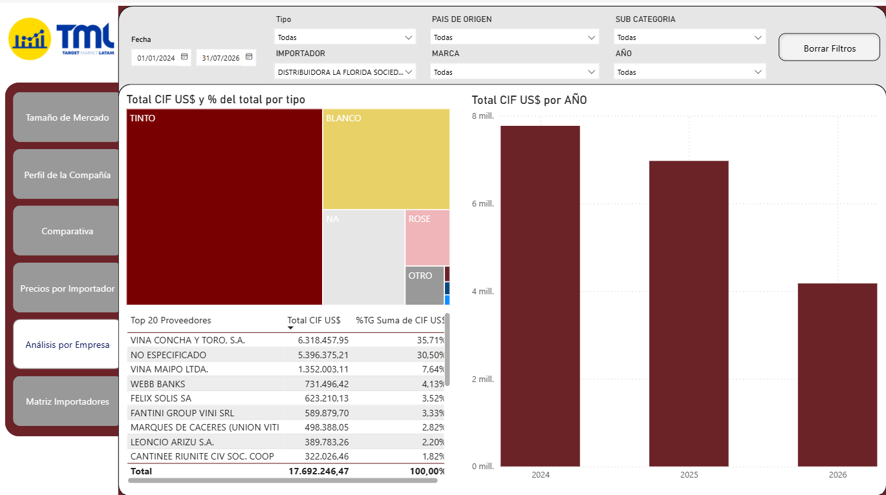
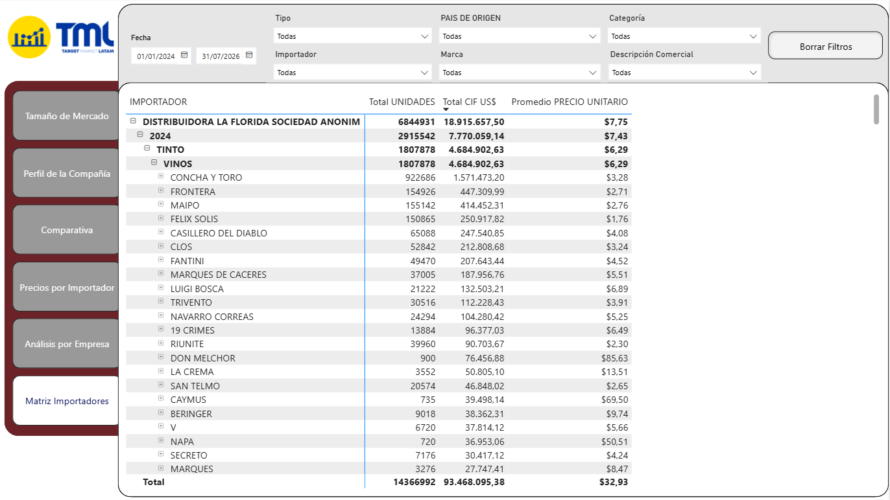

Luis Felipe
Two years of international experience turning raw series into ETL pipelines, dashboards and reports — with a habit of picking economic time series apart to see what's really driving them.
Appreciation typically peaks around October–November, then gives way to depreciation from January through April — read the full breakdown below.
About
§ 01Economist, graduated from the University of Costa Rica in February 2020 (BSc), and from Nova SBE in 2023 (MSc). Currently working as a Data Analyst.
Two-plus years of international experience as a data analyst, specializing in Extract–Transform–Load (ETL) processes: creating data pipelines and report/dashboard production.
- Education
- BSc Economics — Universidad de Costa Rica, Feb 2020
- MSc — Nova School of Business & Economics, 2023
- Currently
- Data Analyst · 2+ years international experience
- Tools
-
Snowflake Access RStudio SAP Power BI Alteryx Excel Workday Tableau
Languages
§ 02Featured Project
§ 03Seasonality in the CRC Exchange Rate
With the Costa Rican Colón (CRC) trading below 500 per dollar for several days running, I pulled fifteen years of data from the BCCR (Central Bank of Costa Rica) to decompose the series. Using Prophet, I extracted the underlying trend and its weekly and yearly seasonality.
The yearly component peaks around October–November, then fades through December into April — consistent with the appreciation-then-depreciation pattern the CRC has shown in recent years. The trend itself has been declining over the past five years, with a further dip visible after November once seasonal effects turn negative.
library(magrittr) library(ggplot2) library(prophet) library(lubridate)
library(zoo) library(forecast)
Projects
§ 04Costa Rica Wine Market Dashboard — TMLCR
Most recentBuilt a Power BI dashboard mapping the wine import market in Costa Rica, segmented by wine type, grape, country of origin and importer. Most of the work happened before a single chart went up: converting heavily raw data from SISTEMA TICA (Costa Rica's Ministerio de Hacienda customs system) into a structured dataset clean enough to actually drive insights.
The underlying pipeline infrastructure was built in RStudio. The end result is a set of views TMLCR's clients use to size the market, profile individual companies, and drill down from an importer all the way to brand-level unit pricing.




BSY Equity and Returns Dashboard
2025Built a dashboard that updates automatically from Yahoo Finance data, connected into Power BI through R — no API needed for the Yahoo Finance pull.
getSymbols("BSY")
BSY_data <- data.frame(Date = index(BSY), coredata(BSY))
RStudio's quantmod, magrittr, tidyverse and lubridate packages did the heavy lifting to connect the data in real time and refresh it with a single click. FRED series (e.g. US real GDP) can be pulled the same way when needed. Bookmarks and filters were added on top to make the UI easier for the end user to navigate.
This dashboard was built entirely with publicly available data.
Dollarization and the Exchange Rate Pass-Through: Is There a Link?
01.07.2023 – 14.01.2024Master of Science thesis
Investigated whether a country's level of deposit dollarization relates to how much exchange-rate movements pass through to inflation.
Built the dataset in R from Levy-Yeyati (2021) deposit dollarization data and the World Bank's World Development Indicators, using dplyr, tidyquant, ggplot2, tidyverse, magrittr, writexl and WDI, among other packages — and pulled out a handful of interesting stylized facts along the way.
Interest Rates, Inflation and Sovereign Debt: The Portuguese Case
01.02.2023 – 02.06.2023Co-authored with Miguel Oliveira and Tiago Campos · code written independently
Used R and Gretl to build a debt-equation specification and a VAR(2) model, forecasting Portuguese public debt and computing impulse response functions against debt interest rate, GDP growth, inflation and the primary surplus.
Both models pointed the same way: Portuguese debt looks sustainable, with a declining trajectory ahead, and the IRFs traced out how debt actually reacts to each variable.
Forecasting the CRC Exchange Rate with Prophet + mFilter
21.06.2022 – 28.06.2022Used Prophet to forecast the CRC/USD exchange rate — a good fit here given the series' non-linearity and heavy seasonality — then applied mFilter to filter the underlying time series.
The seasonality itself told a clear story: the highest-seasonality days run Wednesday through Saturday, and the highest-seasonality months are June and November.
Also available on request — felipebose18 [at] gmail.com